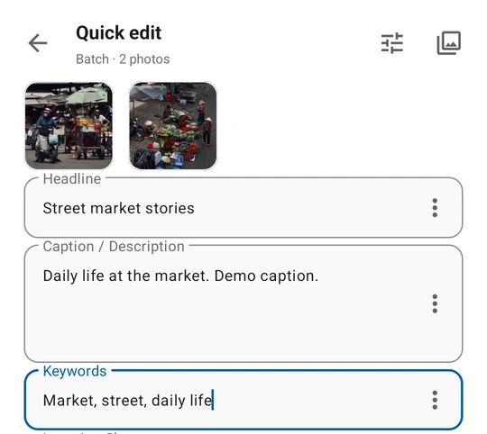

IPTC, EXIF, XMP 편집
캡션, 제목, 키워드, 작성자, 저작권, 권리와 위치 메타데이터를 확인하고 편집합니다.
Explore this featureAndroid 사진 도구
현장에서 바로 쓸 수 있는 사진 메타데이터.
CaptionMeta는 Android 사진 메타데이터 도구입니다. IPTC, EXIF, XMP 필드를 확인하고 편집하며, 메타데이터 프리셋을 재사용하고 비공개 메타데이터를 정리한 사진 사본을 전달할 수 있습니다.



캡션, 제목, 키워드, 작성자, 저작권, 권리와 위치 메타데이터를 확인하고 편집합니다.
Explore this feature사진 사본을 공유하기 전에 선택한 EXIF, IPTC, XMP 데이터를 확인하고 삭제합니다.
Explore this feature여러 사진에 IPTC 프리셋을 재사용하면서 사진별 재정의도 유지합니다.
Explore this feature처리한 사진을 대기열에 넣고 설정된 서버로 전달한 뒤 결과를 확인합니다.
Explore this feature반복 입력, 개인정보 확인과 파일 전달을 하나의 Android 도구에서 처리합니다.